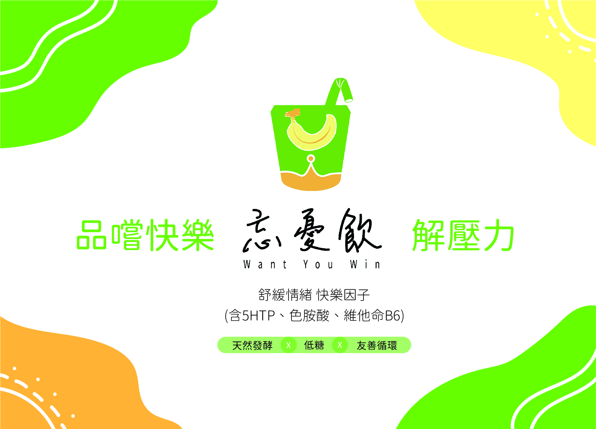
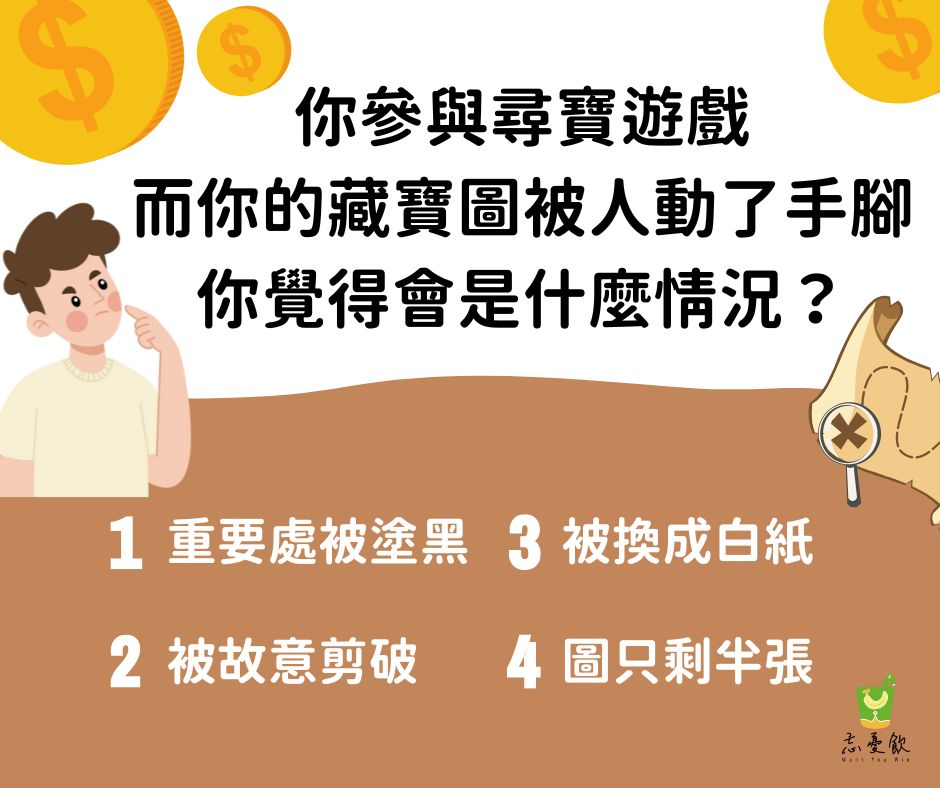
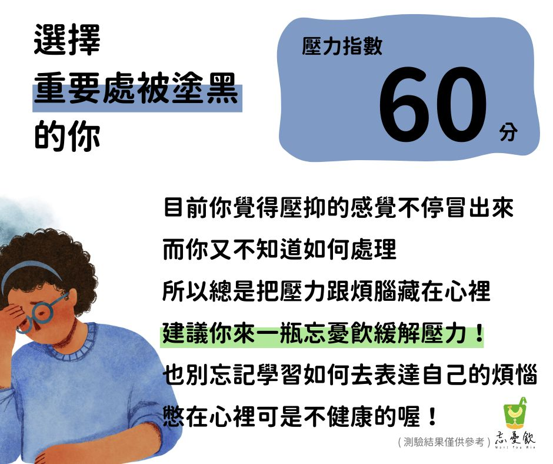
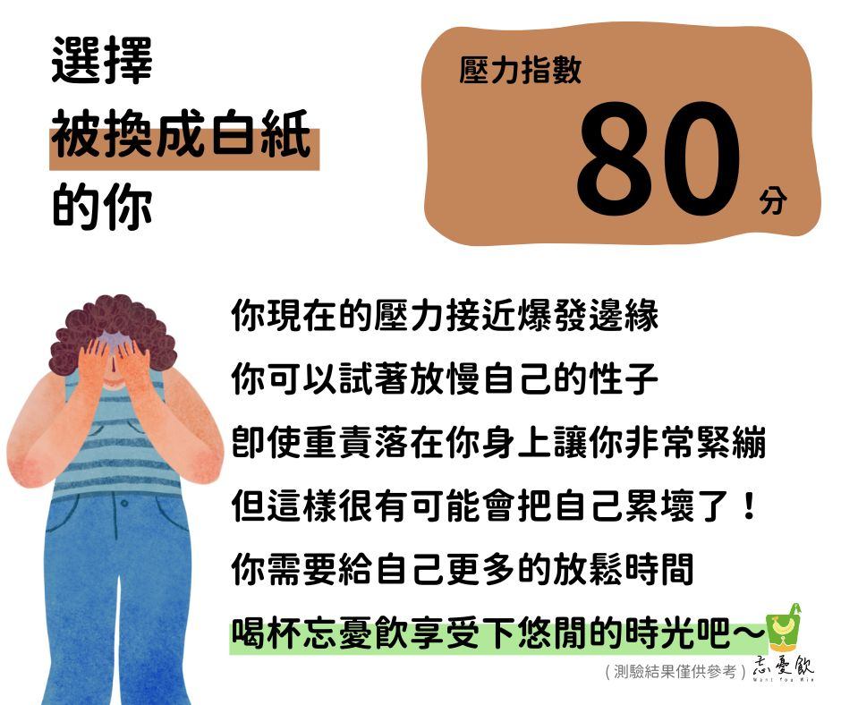
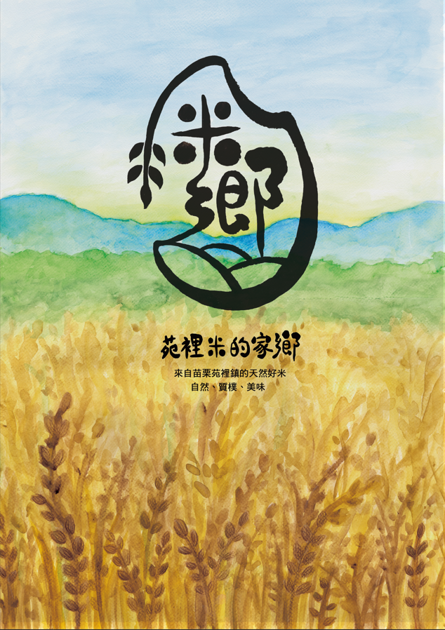
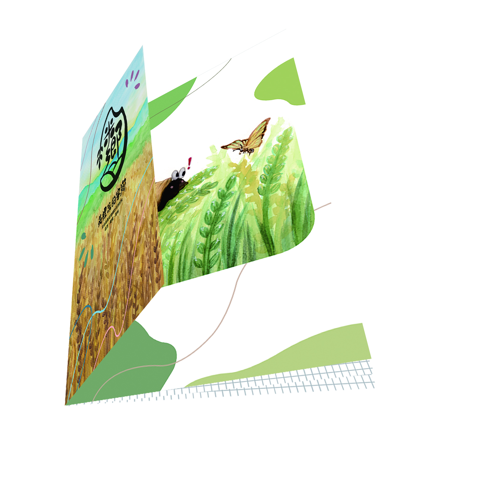

Featured Works.
University Project
大學專題：忘憂飲

忘憂飲 — 主視覺海報
設計理念：運用高明度色彩與負空間，體現天然、無壓的品牌純淨感。
負責部分：視覺風格企劃、版面編排、印刷製程監製

產品介紹明信片 (正面)

產品介紹明信片 (背面)
Color System / 標準色規範
選色理念：以高明度的草綠與鮮黃展現產品天然生命力，輔以黑白系統確保視覺訊息的純淨與精準。
Typography / 標準字規範
忘憂飲 Font System
選字理念：字體選用具現代感的幾何圓潤線條，傳遞品牌簡約且富有質感的調性。
專題數位延伸：心理測驗企劃






High School Project
高中專題：米鄉

米鄉 — 主視覺海報
設計理念：結合苑裡在地文化，將稻米意象轉化為具現代感的視覺標誌。

周邊推廣 — 稻米期程小冊子
以插畫小冊子呈現「米」的成長周期，強化在地文化連結。

周邊推廣 — 明信片組
開發多元周邊產品，將稻米文化融入日常生活。
Rice Home Color / 米鄉標準色
選色理念：以熟成稻穗的金黃與質樸土地的棕色，傳遞溫暖且踏實的在地情感。
Project Management / 行政與規劃
CIS 系統制定與排程管理
核心貢獻：獨立負責全案 CIS 系統制定與視覺整合，精確控管設計時程與實體產出完整性。